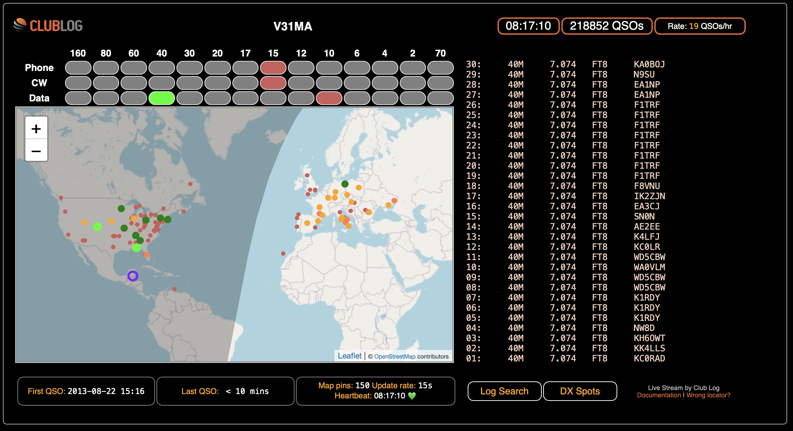

| Some of you have asked what the different colors mean for live streaming DXpeditions. From the ClubLog Website: Happy Holidays ! John, K6MM Colour SchemeThere is a colour scheme to highlight the time since the QSOs were logged, as follows:
More recent QSOs (especially 'Green') have a larger marker circle on the map. The smallest dots are for QSOs that are 24 hours+ old. Looking at an example from V31MA: this station has been active on higher HF bands, and then moved to 40m. This map shows amber and dark green (older) QSOs that have been logged on 40m, but notice that the main band slot is lit bright green because there are also QSOs in the last 10 minutes on 40m. The location of the DX station is signified with a purple circle.  |